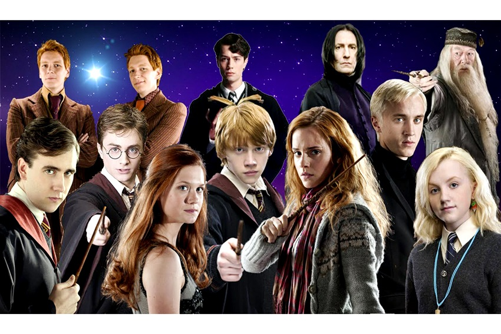

PERSONAJES PRINICPALES
- Harry Potter: El niño que vivió, protagonista de la saga, conocido por su valentía y conexión con Lord Voldemort.
- Hermione Granger: Amiga leal de Harry, extremadamente inteligente y apasionada por el aprendizaje.
- Ron Weasley: Mejor amigo de Harry, conocido por su humor y lealtad, miembro de la familia Weasley.
- Albus Dumbledore: Director de Hogwarts, sabio y poderoso mago que guía a Harry en su lucha contra Voldemort.
- Severus Snape: Profesor de Pociones, con un pasado complejo y un papel crucial en la historia de Harry.
- Rubeus Hagrid: Guardián de las llaves y terrenos de Hogwarts, amante de las criaturas mágicas y amigo de Harry.
- Draco Malfoy: Rival de Harry en Hogwarts, miembro de la casa Slytherin y parte de una familia influyente.
- Lord Voldemort: El antagonista principal, un mago oscuro que busca la inmortalidad y el control del mundo mágico.
- Sirius Black: Padrino de Harry, un hombre valiente y leal que escapa de Azkaban para protegerlo.
- Neville Longbottom: Compañero de Harry en Gryffindor, inicialmente tímido pero demuestra gran valentía y crecimiento.
papel
- Harry Potter: Es el héroe principal que lucha contra las fuerzas del mal y lidera la resistencia contra Lord Voldemort.
- Hermione Granger: Es la mente brillante del grupo, proporcionando conocimiento y soluciones estratégicas en momentos cruciales.
- Ron Weasley: Es el apoyo emocional y el amigo leal que siempre está al lado de Harry, enfrentando los desafíos juntos.
- Albus Dumbledore: Actúa como mentor y guía, proporcionando sabiduría y apoyo en la lucha contra el mal.
- Severus Snape: Es un personaje ambiguo que desempeña un papel clave en la protección de Harry y en la derrota de Voldemort.
- Rubeus Hagrid: Es un protector y amigo de Harry, introduciéndolo al mundo mágico y ayudándolo en sus aventuras.
- Draco Malfoy: Representa el conflicto y la rivalidad, mostrando las complejidades de las elecciones personales.
- Lord Voldemort: Es el villano principal que busca dominar el mundo mágico y destruir a Harry.
- Sirius Black: Es una figura paterna para Harry, brindándole apoyo y amor en momentos difíciles.
- Neville Longbottom: Es un ejemplo de crecimiento personal y valentía, desempeñando un papel crucial en la batalla final.